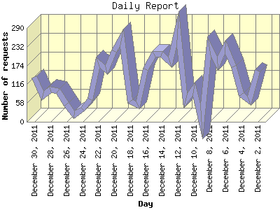

The Daily Report identifies the activity for each day within the reporting period. Remember that one page hit can result in several server requests as the images for each page are loaded.

| Day | Number of requests | Number of page requests | |
|---|---|---|---|
| 1. | December 2, 2011 | 158 | 35 |
| 2. | December 3, 2011 | 65 | 21 |
| 3. | December 4, 2011 | 84 | 27 |
| 4. | December 5, 2011 | 170 | 50 |
| 5. | December 6, 2011 | 231 | 47 |
| 6. | December 7, 2011 | 179 | 42 |
| 7. | December 8, 2011 | 232 | 47 |
| 8. | December 9, 2011 | 0 | 0 |
| 9. | December 10, 2011 | 102 | 27 |
| 10. | December 11, 2011 | 65 | 27 |
| 11. | December 12, 2011 | 288 | 65 |
| 12. | December 13, 2011 | 185 | 50 |
| 13. | December 14, 2011 | 210 | 53 |
| 14. | December 15, 2011 | 209 | 37 |
| 15. | December 16, 2011 | 162 | 38 |
| 16. | December 17, 2011 | 51 | 18 |
| 17. | December 18, 2011 | 62 | 30 |
| 18. | December 19, 2011 | 260 | 61 |
| 19. | December 20, 2011 | 218 | 45 |
| 20. | December 21, 2011 | 161 | 31 |
| 21. | December 22, 2011 | 185 | 41 |
| 22. | December 23, 2011 | 70 | 20 |
| 23. | December 24, 2011 | 38 | 28 |
| 24. | December 25, 2011 | 22 | 18 |
| 25. | December 26, 2011 | 55 | 24 |
| 26. | December 27, 2011 | 95 | 30 |
| 27. | December 28, 2011 | 99 | 33 |
| 28. | December 29, 2011 | 80 | 26 |
| 29. | December 30, 2011 | 138 | 34 |
Most active day December 12, 2011 : 65 pages sent. 288 requests handled.
Daily average: 35 pages sent. 138 requests handled.
This report was generated on December 31, 2011 08:50.
Report time frame December 2, 2011 01:04 to December 30, 2011 23:13.
| Web statistics report produced by: analog 6.0 / Report Magic 2.21 |